I, Emmanuel Nyouma, hereby declare that this project report entitled “Design and Implementation of LexManage: A Multi-Tenant SaaS Legal Practice Management Platform with AI-Powered Document Analysis” is the result of my own original work carried out under the supervision of Mr Baloko. To the best of my knowledge, it contains no material previously published or written by another person, nor material which has been accepted for the award of any other degree or diploma, except where due acknowledgement has been made in the text. All sources of information have been duly referenced.
To my family, whose constant encouragement and sacrifices made this work possible, and to every legal professional striving to serve justice more efficiently.
I wish to express my sincere gratitude to my supervisor, Mr Baloko, for the guidance, constructive criticism and patience that shaped this project from concept to completion.
My thanks also go to the academic staff of the Department Of Computer Engineering, University Of Buea, for the solid grounding in software engineering principles that underpins this work.
Finally, I am deeply grateful to my family, friends and classmates for their moral support, and to the open-source community whose tools made this platform achievable.
Law firms manage a high volume of cases, clients, hearings and confidential documents, yet many still rely on fragmented tools—spreadsheets, shared drives and email—that are error-prone, insecure and difficult to audit. This project presents LexManage, an enterprise-grade, multi-tenant Software-as-a-Service (SaaS) platform that consolidates legal practice management into a single secure web application.
LexManage is built as a decoupled system: a React 19 single-page application communicates with a NestJS REST API backed by PostgreSQL through the Prisma ORM. Strict tenant isolation is enforced at the application layer using Node.js AsyncLocalStorage together with a Prisma client extension, guaranteeing that one firm can never access another firm’s data. The platform provides role-based access control, JWT authentication with refresh tokens, an immutable audit trail, real-time notifications over Socket.io, secure document storage on MinIO via presigned URLs, and an AI assistant (LexAssist) that uses Retrieval-Augmented Generation (RAG)—implemented as n8n workflows with Cohere embeddings, a Pinecone vector database and a DeepSeek language model—to answer questions over case files with verifiable citations.
The system was developed following an iterative, Agile methodology and validated through unit, integration and system testing. The result is a responsive, bilingual (English/French) platform that improves the efficiency, security and traceability of day-to-day legal operations. This report documents the problem analysis, requirements, design, implementation and testing of the platform.
Keywords: Legal Tech, SaaS, Multi-tenancy, NestJS, React, Prisma, RBAC, Retrieval-Augmented Generation, Vector Database, Audit Trail.
| AI | Artificial Intelligence |
| ALS | AsyncLocalStorage |
| API | Application Programming Interface |
| CRM | Client Relationship Management |
| CRUD | Create, Read, Update, Delete |
| CI/CD | Continuous Integration / Continuous Delivery |
| DFD | Data Flow Diagram |
| DMS | Document Management System |
| DTO | Data Transfer Object |
| ERD | Entity-Relationship Diagram |
| HTTP | HyperText Transfer Protocol |
| JWT | JSON Web Token |
| LLM | Large Language Model |
| MFA | Multi-Factor Authentication |
| ORM | Object-Relational Mapping |
| RAG | Retrieval-Augmented Generation |
| RBAC | Role-Based Access Control |
| REST | Representational State Transfer |
| SaaS | Software as a Service |
| SPA | Single-Page Application |
| SQL | Structured Query Language |
| UI/UX | User Interface / User Experience |
| WSS | WebSocket Secure |
The legal profession is, by its very nature, information-intensive. A single case may involve dozens of clients, hearings, statutory deadlines and hundreds of pages of confidential documents that must be stored, retrieved and acted upon with precision. As caseloads grow, the tools many firms use to coordinate this work—spreadsheets, shared folders and email threads—struggle to keep pace. This chapter introduces LexManage, a web-based legal practice management platform designed to address these challenges, and sets out the background, problem, objectives and scope of the project.
@@t8@@Digital transformation has reshaped most professional services, yet legal practice management in many jurisdictions remains comparatively under-digitised. Where dedicated software exists it is often expensive, installed on a single machine, or hosted abroad with limited regard for local data-protection expectations. Meanwhile, advances in cloud computing have popularised the Software-as-a-Service (SaaS) delivery model, in which a single, centrally maintained application securely serves many independent organisations (tenants) over the internet.
In parallel, the maturation of Large Language Models (LLMs) has created an opportunity to augment knowledge work. When combined with Retrieval-Augmented Generation (RAG)—a technique that grounds an LLM’s answers in an organisation’s own documents—these models can summarise lengthy files, draft routine clauses and answer questions with traceable citations. LexManage was conceived to bring both of these advances, secure multi-tenant SaaS and document-grounded AI, to the day-to-day operations of a law firm.
@@t9@@Law firms that rely on disconnected, manual tools face a set of recurring and costly problems:
The core problem this project addresses is therefore the absence of a single, secure and intelligent system that unifies client, case, calendar and document management for a law firm while guaranteeing strict data isolation between firms.
@@t10@@To design and implement a secure, multi-tenant SaaS platform that centralises and streamlines the management of clients, cases, hearings and documents for law firms, enhanced with an AI assistant for document analysis.
@@t12@@For legal practitioners, LexManage reduces administrative overhead, lowers the risk of missed deadlines and accelerates document review, freeing time for substantive legal work. For firm administrators, it provides governance through RBAC, audit logging and centralised configuration. For the discipline of software engineering, the project is a concrete case study in building a secure multi-tenant SaaS system and in applying RAG to a regulated, confidentiality-sensitive domain.
@@t14@@The project covers the design and implementation of a working web platform comprising: firm onboarding and team invitations; authentication and RBAC; client, case, calendar and document management; real-time notifications; an audit trail; and an AI document-analysis assistant. The work focuses on the software system itself. Native mobile applications, online payment processing, integration with external court e-filing systems and large-scale production deployment/operations are considered out of scope, although the architecture is designed to accommodate such extensions in future.
@@t15@@| Term | Meaning in this report |
|---|---|
| Tenant | An isolated organisation (law firm) within the SaaS platform; all of a tenant’s data is private to it. |
| Multi-tenancy | An architecture where one running application instance securely serves many tenants. |
| RBAC | Role-Based Access Control—permissions granted according to a user’s role. |
| JWT | A signed token used to authenticate API requests without server-side session storage. |
| RAG | Retrieval-Augmented Generation—grounding an LLM’s answers in retrieved documents. |
| Vector database | A store of numerical ‘embeddings’ enabling semantic similarity search (Pinecone). |
| Presigned URL | A temporary, signed link granting time-limited access to a stored file. |
| Audit trail | An immutable log of who performed which action on which record and when. |
The remainder of this report is organised as follows. Chapter II reviews existing systems and positions the proposed solution. Chapter III presents the materials and methods used, covering the development methodology, system analysis (requirements and diagrams) and system design (architecture, data model and user-interface design). Chapter IV describes the implementation, results and testing of the platform. Chapter V concludes the report and offers recommendations and perspectives for further work.
This chapter surveys existing approaches to legal practice management and the technologies that underpin them, in order to identify gaps that LexManage seeks to fill. It examines representative commercial systems, the general-purpose tools firms improvise with, and the technical foundations of multi-tenancy and Retrieval-Augmented Generation, before stating the proposed solution.
@@t19@@A range of solutions are used, formally or informally, to manage legal work. The most relevant categories and representative examples are reviewed below.
@@t20@@Clio is a mature, cloud-based legal practice management suite offering case management, billing and client intake. It is feature-rich and widely adopted, but it is a commercial product priced per user per month, hosted in foreign data centres, and offers limited document-grounded AI; its cost and data-residency model can be unsuitable for smaller or locally focused firms.
@@t21@@MyCase provides case management, client communication and invoicing with a friendly interface. Like Clio it is subscription-based and closed-source, and its automation focuses on workflow templates rather than on AI-assisted analysis of the firm’s own documents.
@@t22@@PracticePanther emphasises automation and ease of use for small firms. It covers the core management functions well but, again, is a proprietary hosted service with limited transparency over how and where data is stored and no open, document-grounded AI capability.
@@t23@@Many firms manage matters with general-purpose tools. These are inexpensive and familiar but provide no access control beyond folder permissions, no audit trail, no structured deadline tracking and no protection against data being mixed between unrelated matters or clients.
@@t24@@Dedicated legal DMS products excel at secure document storage and versioning but are typically expensive, focus narrowly on documents rather than the full practice workflow, and are not designed around modern document-grounded AI assistants.
@@t25@@The review shows that existing options force a trade-off: powerful commercial suites are costly, proprietary and host data abroad with little AI grounding, while improvised tools are cheap but insecure and fragmented. None combine, in a single accessible system: strict multi-tenant isolation, role-based governance, an audit trail, real-time alerts and an AI assistant that answers questions over the firm’s own documents with citations.
| Capability | Commercial suites | Generic tools | Legal DMS | LexManage |
|---|---|---|---|---|
| Multi-tenant SaaS | Yes | No | Partial | Yes |
| RBAC & audit trail | Partial | No | Partial | Yes |
| Case + calendar + CRM | Yes | Manual | No | Yes |
| Secure document store | Yes | No | Yes | Yes |
| Document-grounded AI (RAG) | Limited | No | No | Yes |
| Real-time notifications | Partial | No | No | Yes |
LexManage is proposed as an integrated, multi-tenant SaaS platform that unifies the strengths of the reviewed categories while closing their gaps. It delivers full practice management (clients, cases, calendar, documents) with enterprise-grade security (JWT authentication, RBAC, strict tenant isolation, audit logging and presigned-URL document access), real-time collaboration via Socket.io, and a built-in AI assistant—LexAssist—that applies Retrieval-Augmented Generation over the firm’s documents to provide summaries, drafts and grounded answers with citations. The design, methods and implementation that realise this solution are detailed in the following chapters.
This chapter describes how the LexManage platform was engineered. It first presents the development methodology, then the system analysis—requirements, data-flow, use-case and activity models, cost and schedule—and finally the system design, covering the tools used, architecture, class and sequence models, user-interface design, the entity-relationship model and the data dictionary.
@@t29@@An iterative and incremental (Agile) methodology was adopted. Rather than attempting to specify the entire system up front, development proceeded in short cycles, each delivering a working slice of functionality (for example, authentication, then case management, then the AI assistant). Every iteration comprised requirements refinement, design, implementation and testing, allowing feedback to be incorporated continuously and risk to be reduced early. This approach suited a single-developer project of evolving scope and aligned naturally with the modular structure of the NestJS backend and the component-based React frontend.
@@t31@@System analysis translates the problem and objectives of Chapter I into a precise specification of what the platform must do and the constraints under which it must operate.
External Interface Requirements
Features or Modules of the System
Functional Requirements
| ID | Requirement |
|---|---|
| FR-1 | The system shall allow an administrator to create a firm and invite collaborators via a secure, expiring token. |
| FR-2 | The system shall authenticate users with email/password and issue JWT access and refresh tokens. |
| FR-3 | The system shall enforce role-based permissions for admin, lawyer and assistant roles. |
| FR-4 | The system shall let authorised users create, read, update and archive clients, cases and documents. |
| FR-5 | The system shall schedule hearings/deadlines and send reminders ahead of due dates. |
| FR-6 | The system shall store documents securely and serve them through time-limited presigned URLs. |
| FR-7 | The system shall answer natural-language questions over a firm’s documents using RAG, returning citations. |
| FR-8 | The system shall deliver real-time notifications and highlight urgent alerts. |
| FR-9 | The system shall record an immutable audit log of create/update actions on key entities. |
| FR-10 | The system shall isolate each firm’s data so it is inaccessible to any other firm. |
Non-functional Requirements
| ID | Category | Requirement |
|---|---|---|
| NFR-1 | Security | All traffic over HTTPS; passwords hashed; secrets held server-side; presigned-URL file access. |
| NFR-2 | Privacy/Isolation | Strict per-tenant data isolation enforced automatically on every query. |
| NFR-3 | Performance | Typical interactive requests served in under ~300 ms; calendar views optimised for O(1) lookups. |
| NFR-4 | Usability | Responsive, accessible UI with bilingual support and clear empty/error states. |
| NFR-5 | Reliability | Graceful error handling and retry; no single failed request crashes the UI. |
| NFR-6 | Maintainability | Modular, layered codebase with DTO validation and centralised error handling. |
| NFR-7 | Scalability | Stateless API enabling horizontal scaling behind a load balancer. |
Data Flow Diagrams (DFDs)
The context (level-0) data-flow diagram in Figure 3.1 situates LexManage among its external entities—firm staff, the n8n AI service (DeepSeek, Cohere and Pinecone), the MinIO object store and the e-mail gateway—and shows the principal data exchanged with each.
Use Case Analysis and Diagrams
The principal actors are the Cabinet Administrator, the Lawyer and the Assistant/Secretary. The administrator manages the firm and its members; lawyers manage cases, clients, documents and use the AI assistant; assistants support document and calendar work. Figure 3.2 presents the use-case diagram.
Activity Diagrams
Two activities capture the platform’s most important control flows. The first, Figure 3.3, models document ingestion and AI indexing: a file uploaded through the interface is stored in MinIO, after which an n8n workflow extracts its text (branching on file type), splits it into overlapping chunks, generates Cohere embeddings and upserts the resulting vectors into Pinecone before the document is marked as indexed.
The second, Figure 3.4, models creating a new case: the user completes the form, the input is validated (looping back on error), the case is persisted within the firm’s tenant scope, and an audit entry and a real-time notification are produced in parallel before the new case appears in the list.
Cost Evaluation
Because the platform is built entirely on free and open-source software and free service tiers, the development cost is dominated by human effort. An indicative evaluation is given below.
| Item | Description | Estimated cost |
|---|---|---|
| Development effort | ~4 months, single developer (opportunity cost) | Time-based |
| Software tools | NestJS, React, PostgreSQL, MinIO, n8n, VS Code (all open-source) | 0 |
| AI services | DeepSeek (chat), Cohere (embeddings/rerank) and Pinecone (vector store) on free/low-cost tiers | Low / metered |
| Hosting (dev) | Local Docker environment | 0 |
| Hosting (production, indicative) | Cloud VPS + managed PostgreSQL | ~$20–50 / month |
Project Schedule
| Phase | Activities | Duration |
|---|---|---|
| 1. Analysis | Requirements gathering, literature review | Weeks 1–2 |
| 2. Design | Architecture, data model, UI design | Weeks 3–4 |
| 3. Core implementation | Auth, RBAC, multi-tenancy, CRUD modules | Weeks 5–9 |
| 4. AI & realtime | RAG assistant, notifications, audit trail | Weeks 10–12 |
| 5. Testing & hardening | Unit/integration/system tests, fixes | Weeks 13–14 |
| 6. Documentation | Report writing and finalisation | Weeks 15–16 |
The design realises the requirements as a decoupled, layered system. This section presents the tools used, hardware and software requirements, the acquisition strategy, the class, sequence and architecture models, the user-interface design, and finally the entity-relationship model and data dictionary.
Tools and Materials Used
The technology stack was selected for type-safety, modularity and a strong open-source ecosystem.
1. Hardware Requirements
| Environment | Minimum specification |
|---|---|
| Developer / server host | Quad-core CPU, 8 GB RAM (16 GB recommended), 20 GB free disk. |
| Client device | Any modern device capable of running a current web browser. |
2. Software Requirements
| Layer | Technology | Purpose |
|---|---|---|
| Frontend | React 19, Vite, Tailwind CSS | Responsive single-page user interface |
| State / data | Zustand, TanStack React Query | Global state and server-state caching |
| Backend | NestJS (Node.js, TypeScript) | Modular REST API and business logic |
| Database | PostgreSQL + Prisma ORM | Relational, tenant-scoped persistence |
| Object storage | MinIO (S3-compatible) | Secure document storage with presigned URLs |
| Vector store | Pinecone | Embedding index for semantic retrieval (RAG) |
| AI orchestration | n8n | Low-code workflows for document ingestion and RAG queries |
| Chat model | DeepSeek | Grounded answer generation over retrieved context |
| Embeddings & rerank | Cohere | Document/query embeddings and relevance reranking |
| Realtime | Socket.io | Live notifications and updates |
| Auth | JWT (access + refresh) | Stateless authentication |
| Tooling | Docker, Git, ESLint | Environment, version control, quality |
System Acquisition Strategy
A build rather than buy strategy was chosen. Commercial suites would impose recurring per-user fees, foreign data residency and limited extensibility, none of which fit the academic and local-firm context of this project. Building on open-source components yields full control over data, security and the AI pipeline, and provides a richer learning outcome.
Class Diagram
At the domain level the principal classes mirror the persistence model. Figure 3.5 presents the UML class diagram. Tenant composes User, Client, Case, Document, Event/Deadline, Notification, Invitation and AuditLog, guaranteeing that every object is owned by exactly one firm. A Case belongs to a Client, is assigned to a User, and aggregates Document and Event objects; each class carries the attributes and key operations used by the application.
Sequence Diagrams
Two interactions illustrate the dynamic behaviour of the system. Figure 3.6 shows the authentication sequence: the user’s credentials are verified against the database, the API signs a short-lived JWT access token and a refresh cookie, and the SPA stores the token and redirects to the dashboard.
Figure 3.7 shows the LexAssist AI query, the system’s most distinctive workflow. The request is forwarded by the NestJS API to an n8n workflow whose AI Agent embeds the question with Cohere, performs a reranked similarity search in Pinecone, and passes the retrieved context to the DeepSeek chat model, which returns a grounded answer with citations.
System Architecture
LexManage follows a classic three-tier architecture, decoupled across a presentation tier (React SPA), an application tier (NestJS API enforcing authentication, RBAC and tenant isolation) and a data tier (PostgreSQL, MinIO and the Pinecone vector store). The AI capability is provided by a separate AI-automation tier built with n8n, which the API calls for ingestion and queries and which in turn uses the DeepSeek chat model and Cohere embeddings/reranker. Tenant isolation is enforced at the application tier using AsyncLocalStorage to carry the current tenant’s identity through each request and a Prisma client extension that automatically scopes every query to that tenant. Figure 3.8 illustrates the architecture.
User Interface Design
The interface follows a clean, professional design language with a persistent navigation sidebar, a global header (search, notifications and the AI entry point) and a content area that renders the active view. Care was taken to provide meaningful empty and error states. Figure 3.9 shows the secure authentication screen and Figure 3.10 the firm-onboarding (invitation) flow.
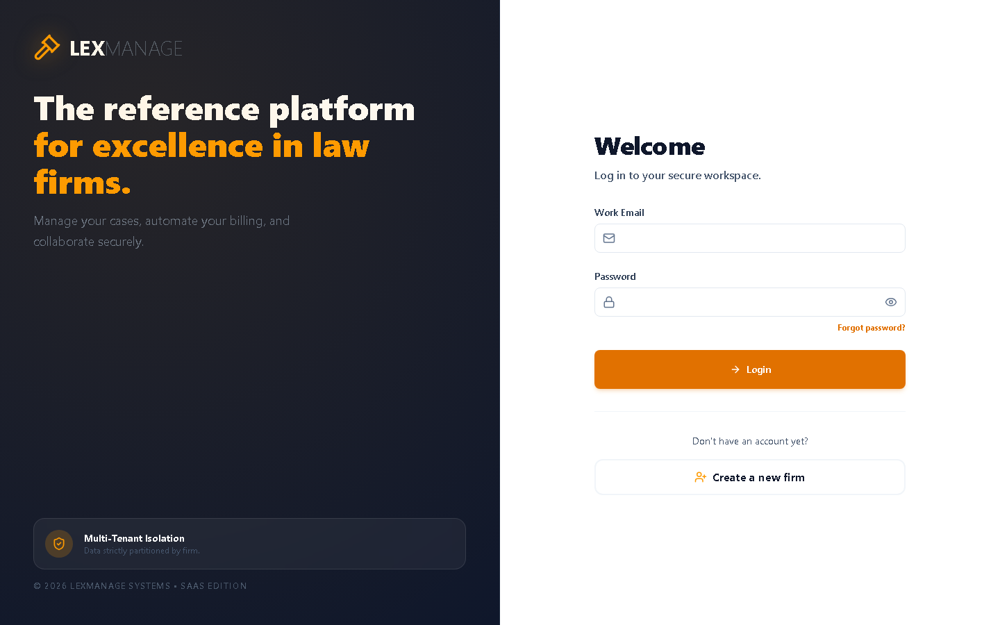
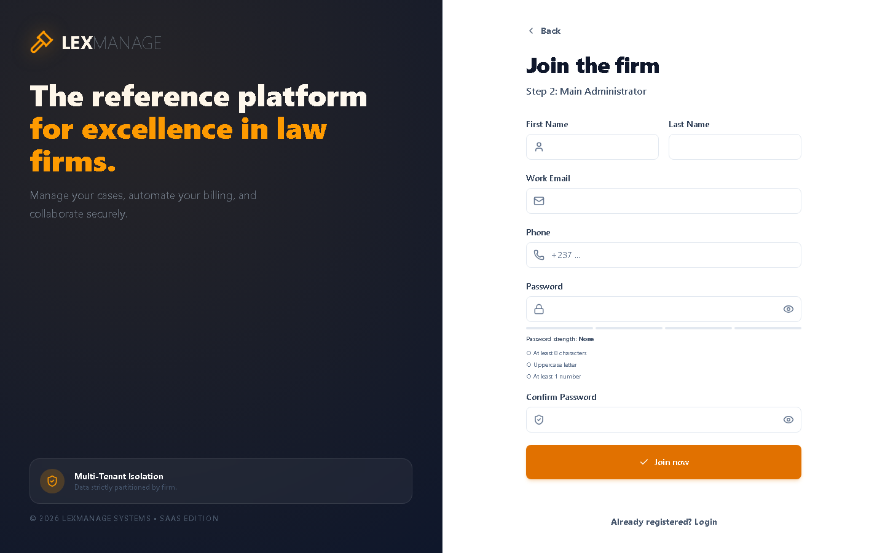
Entity-Relationship (ER) Diagram
The relational data model is centred on the Tenant entity, from which all other records descend, guaranteeing isolation by construction. Figure 3.11 presents a simplified ER diagram of the core entities and their relationships.
Data Dictionary
Table 3.7 documents the principal entities and their key attributes.
| Entity | Key attributes | Notes |
|---|---|---|
| Tenant | id (PK), name, slug, plan, barNumber, country | Root firm/organisation; owns all data. |
| User | id (PK), tenant_id (FK), email, passwordHash, role | Member of a firm; role drives RBAC. |
| Client | id (PK), tenant_id (FK), name, type_client, email | CRM entity (physical or legal person). |
| Case | id (PK), tenant_id (FK), client_id (FK), assignee_id (FK), status, priority | Legal matter/file. |
| Document | id (PK), tenant_id (FK), case_id (FK), type, status, file_url | Metadata for a file stored in MinIO. |
| Deadline | id (PK), case_id (FK), dueAt, isDone, priority | Hearing/time-limit; drives reminders. |
| Notification | id (PK), tenant_id (FK), level, motif, recipient_ids | Real-time/scheduled alert. |
| AuditLog | id (PK), tenant_id (FK), user_id (FK), action, entity, entityId | Immutable change record. |
| ChatConversation | id (PK), tenant_id (FK), user_id (FK), messages[] | LexAssist AI conversation history. |
This chapter reports how the design of Chapter III was implemented, presents the resulting system through its user interface, and describes the testing carried out to validate it.
@@t46@@The system was implemented as two cooperating applications—a React frontend and a NestJS backend—sharing a PostgreSQL database, with MinIO for object storage and a set of n8n workflows (using DeepSeek, Cohere and Pinecone) providing the AI capability, all orchestrated for development with Docker Compose.
@@t47@@Every authenticated request carries a JWT from which the user’s tenant is resolved. The tenant identifier is placed into an AsyncLocalStorage context that follows the request through the asynchronous call chain. A Prisma client extension then transparently injects a tenantId filter into all read and write operations, so that application code cannot accidentally read or write another firm’s data. Authentication issues short-lived access tokens alongside refresh tokens, passwords are hashed, and all sensitive keys (including the AI service credentials) are held server-side only. Role-based guards restrict administrative routes to the CABINET_ADMIN and SUPER_ADMIN roles.
The modules expose validated REST endpoints consumed by the frontend through TanStack React Query, which provides caching, background refresh and optimistic updates. Figure 4.1 shows the main application shell—navigation sidebar, global header and the dashboard, which aggregates key indicators for the firm.
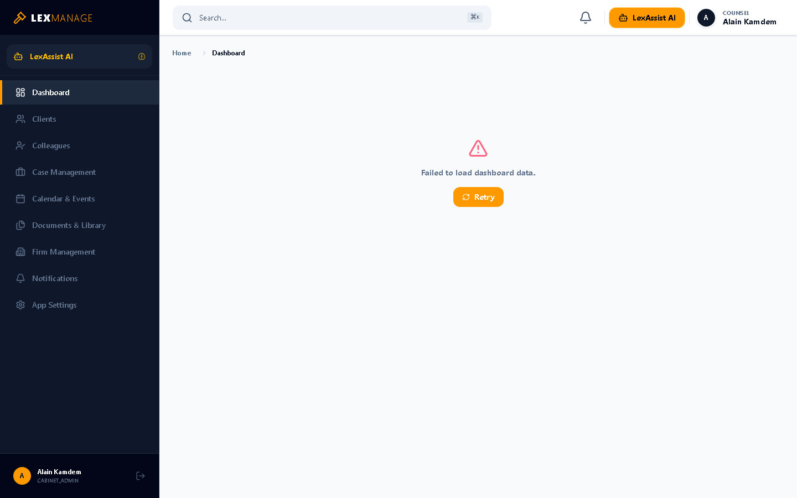
Cases are created from the case-management view through a guided dialog. Figure 4.2 shows the ‘Open New Case’ form, which captures the subject, client, case reference, jurisdiction, initial status and strategic notes, and allows supporting documents to be attached at creation time.
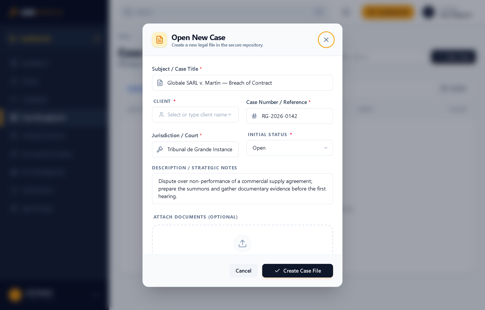
The CRM module manages the firm’s clients. Figure 4.3 shows the ‘Add a client’ dialog, which distinguishes individual from corporate clients and records the contact details and an optional link to an existing record.
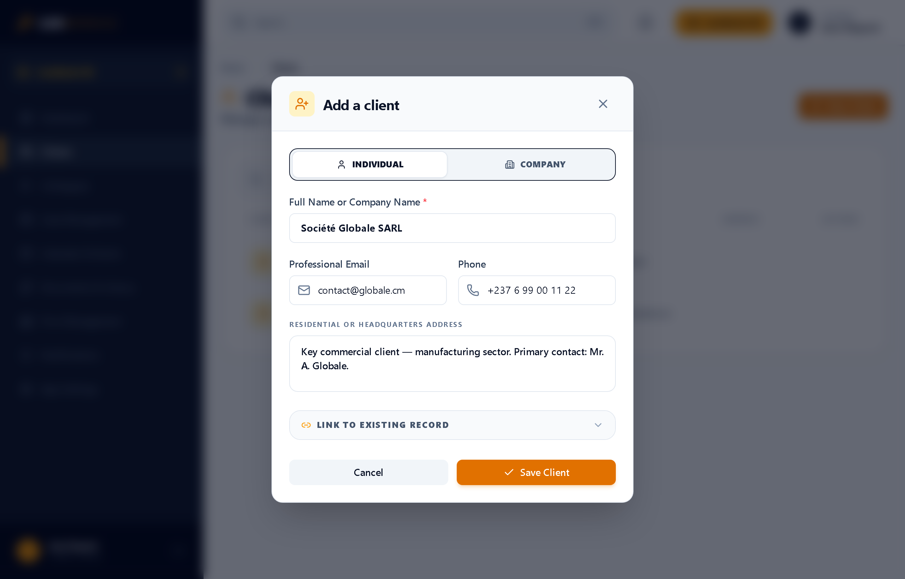
The calendar module (Figure 4.4) presents hearings and deadlines in a month grid optimised for fast lookups, with automated reminders generated by scheduled (cron) jobs ahead of due dates. New entries are added through the dialog in Figure 4.5, which records the title, due date, priority and the associated case file.
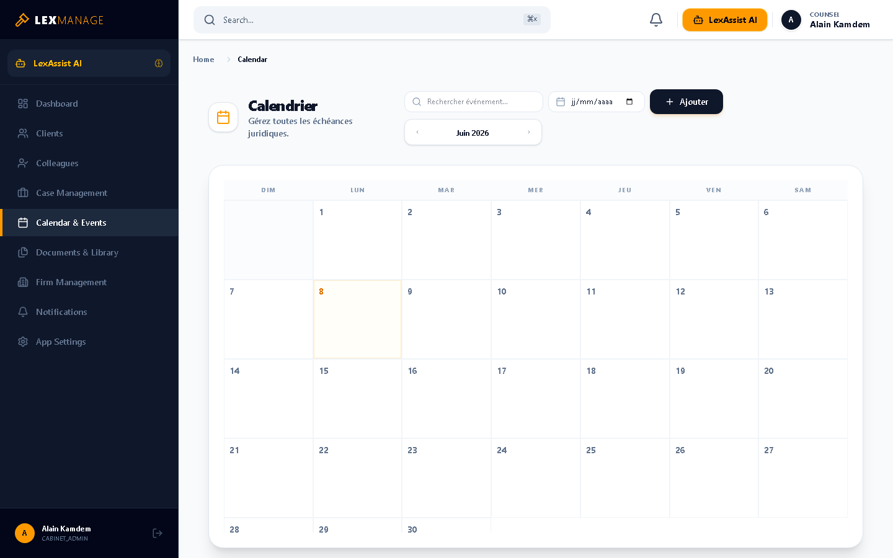
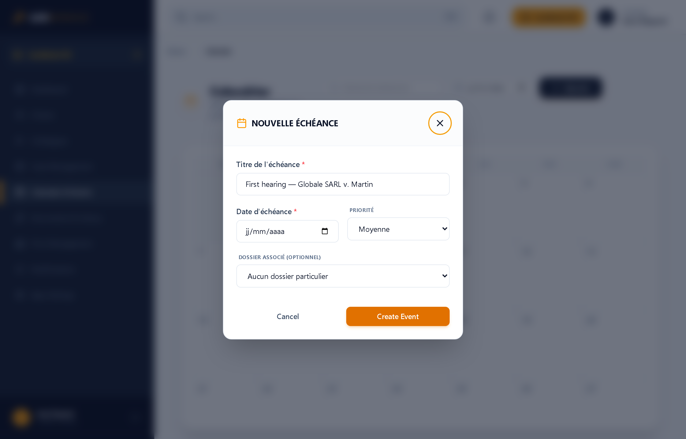
Documents are managed in a structured, role-aware library. Figure 4.6 shows the upload panel, where a file is categorised, an access level is chosen (which roles may consult it) and the file is dropped for secure storage in MinIO (PDF, DOCX or TXT).
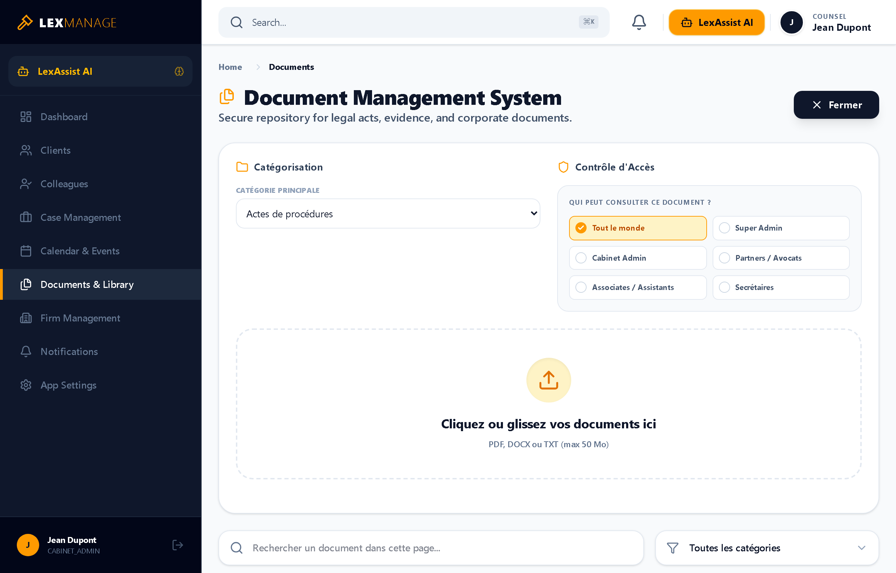
Administrators manage their firm from a dedicated panel (Figure 4.7): they can view the team, issue secure, expiring e-mail invitations, assign roles and edit firm information. New members join through the invitation flow shown earlier (Figure 3.10).
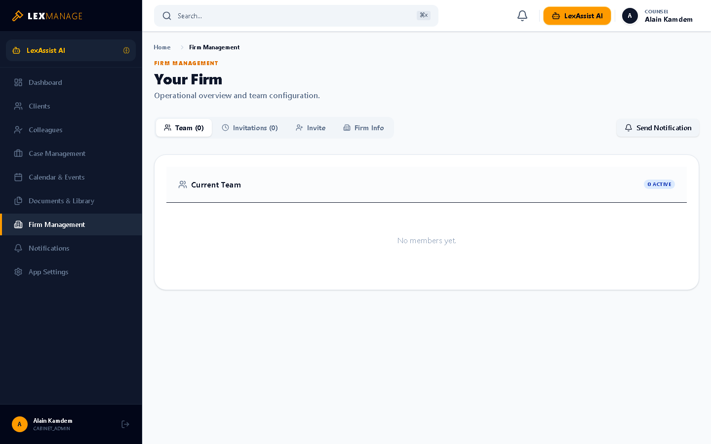
Administrators can also broadcast alerts to the team. Figure 4.8 shows the first step of the ‘Send Notification’ wizard, where the urgency level (normal, important or urgent) is selected; urgent alerts bypass the standard queue and trigger an immediate pop-up for recipients.
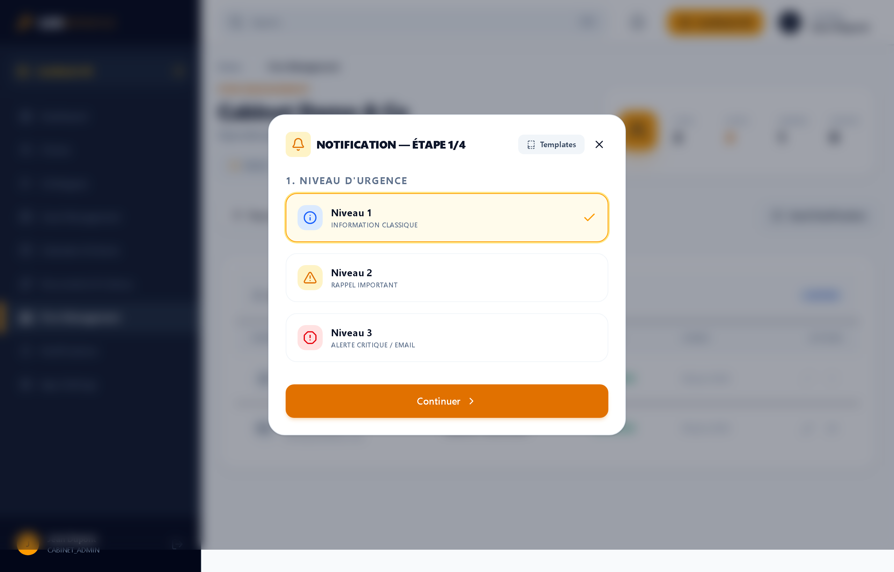
The AI assistant is implemented not inside the backend but as two n8n low-code workflows that the NestJS API invokes over webhooks. This keeps AI credentials and orchestration logic outside the client and makes the pipeline easy to inspect and modify. The first workflow ingests and indexes documents; the second answers questions using Retrieval-Augmented Generation.
Figure 4.9 shows the ingestion workflow. When a document is uploaded, the workflow extracts its text, splits it into overlapping chunks, embeds them with Cohere and stores the vectors in Pinecone. Table 4.1 explains the role of each node.
figures/n8n-ingest.png| Node | Role in the workflow |
|---|---|
| Ingest Webhook (POST) | Entry point; receives the upload event (document id, tenant, file reference) from the NestJS backend. |
| Extract / Edit fields | Normalises the payload—document id, tenant namespace, file URL and MIME type. |
| Switch (Format — Rules) | Routes the item by file type (PDF / DOCX / TXT) to the correct extractor. |
| Extract from File | Reads the binary file and extracts its raw text content (e.g. Extract from PDF). |
| Recursive Character Text Splitter | Splits long text into overlapping chunks suitable for embedding. |
| Default Data Loader | Wraps each chunk together with its metadata into a document object. |
| Embeddings (Cohere) | Generates a numerical vector embedding for every chunk. |
| Pinecone Vector Store (Insert) | Upserts the chunk vectors into the firm’s Pinecone namespace, completing indexing. |
Figure 4.10 shows the query workflow. An AI Agent node orchestrates retrieval and generation: it embeds the question, searches and reranks the relevant chunks in Pinecone, and asks the DeepSeek chat model for a grounded answer. Table 4.2 explains each node.
figures/n8n-rag.png| Node | Role in the workflow |
|---|---|
| Webhook (POST) | Receives the user’s question and context from the backend /chat endpoint. |
| Verify & Extract userId | Validates the request and extracts the user/tenant so retrieval is scoped to the firm. |
| AI Agent | Orchestrates the RAG loop—decides when to call the retrieval tool and composes the final answer. |
| DeepSeek Chat Model | The large language model that generates the grounded natural-language answer. |
| Simple Memory | Maintains short-term conversational context across successive questions. |
| Pinecone Vector Store (tool) | Retrieval tool; performs semantic search over the firm’s indexed document vectors. |
| Embeddings (Cohere) | Embeds the question so it can be compared against the stored vectors. |
| Reranker (Cohere) | Re-orders the retrieved chunks by relevance before they reach the model. |
| Respond to Webhook | Returns the generated answer (with citations) to the backend, which relays it to the UI. |
In the application itself, the assistant is reached through the LexAssist panel (Figure 4.11), which offers guided prompts and renders answers with their supporting citations.
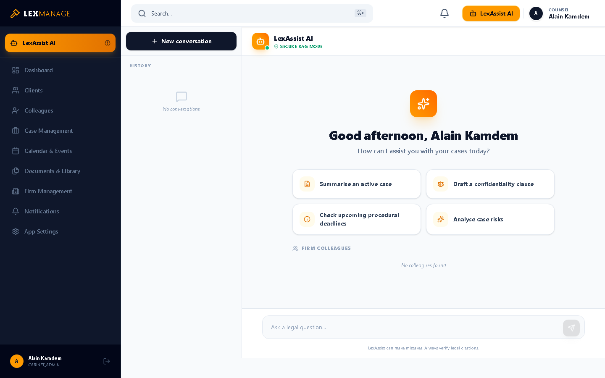
Each user manages their identity and security from the profile view (Figure 4.12), which surfaces multi-factor-authentication status and password management. Application-wide preferences such as language (English/French) and light/dark appearance are configured in settings (Figure 4.13), satisfying the usability and localisation requirements.
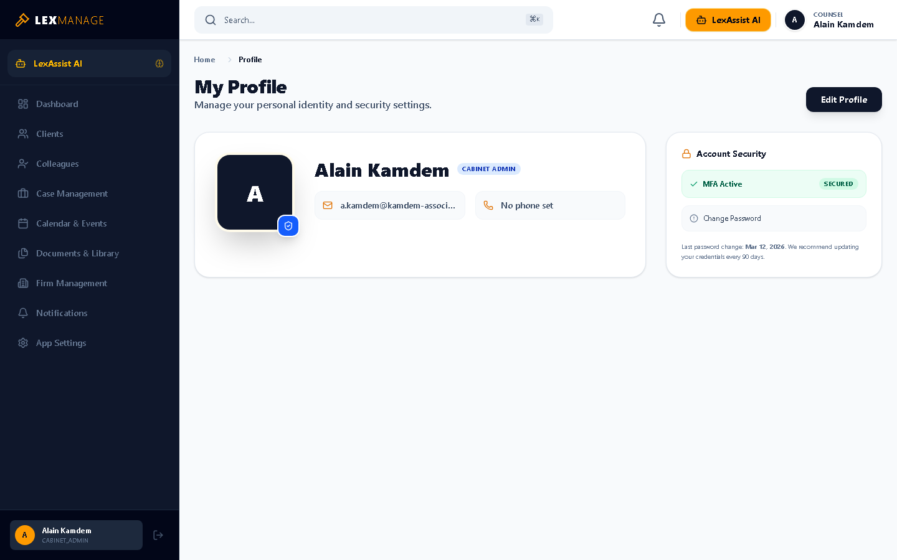
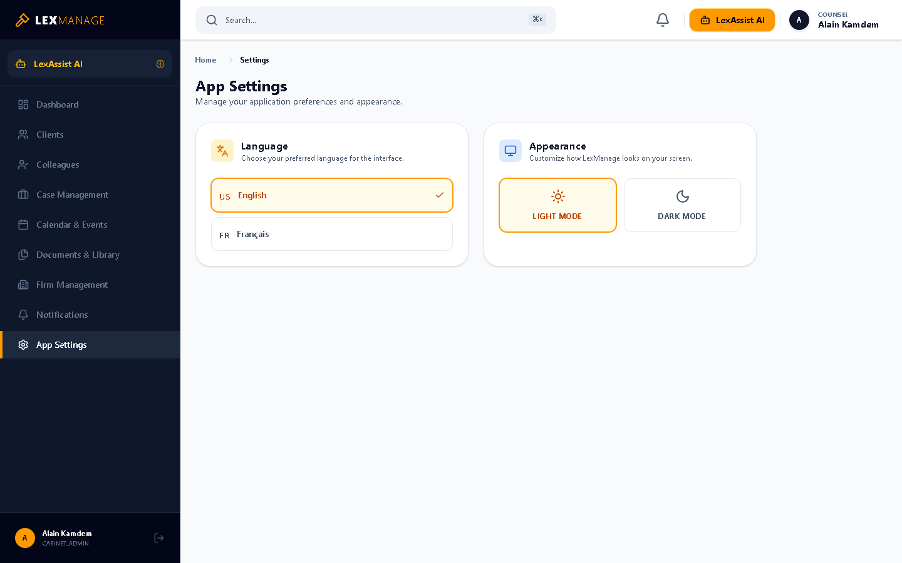
Testing followed the classic V-model levels—unit, integration and system—to validate correctness from individual functions up to complete user workflows. The platform’s resilient design was also confirmed: when a backend service is unavailable, views display clear, non-fatal error states with a retry action rather than crashing.
@@t68@@Individual services and pure functions were exercised in isolation (for example the notifications service) using the Jest framework, with external dependencies mocked. Unit tests confirmed business rules such as role checks and tenant scoping behave as specified.
| ID | Unit under test | Expected result | Status |
|---|---|---|---|
| UT-1 | Password hashing/verification | Correct password verifies; wrong password rejected | Pass |
| UT-2 | Tenant-scoping Prisma extension | Query is filtered by current tenantId | Pass |
| UT-3 | RBAC guard for admin route | Non-admin role is denied access | Pass |
| UT-4 | Notification urgency classification | URGENT alerts flagged for pop-up | Pass |
Integration tests verified that modules cooperate correctly across boundaries—controller to service to database, and API to external services such as MinIO and the n8n AI workflows.
| ID | Interaction | Expected result | Status |
|---|---|---|---|
| IT-1 | Login → JWT issue → protected request | Valid token grants access; invalid token rejected | Pass |
| IT-2 | Upload document → MinIO → presigned URL | File stored; time-limited URL returned | Pass |
| IT-3 | Create case → audit log + realtime event | Audit entry written; clients notified live | Pass |
| IT-4 | AI query → n8n (Cohere + Pinecone) → DeepSeek | Grounded answer with citations returned | Pass |
End-to-end system testing validated complete user journeys against the functional requirements, and confirmed cross-tenant isolation by attempting (and failing, as designed) to access another firm’s records.
| ID | Scenario | Expected result | Status |
|---|---|---|---|
| ST-1 | Admin creates firm, invites lawyer, lawyer joins | Both users operate within the same isolated firm | Pass |
| ST-2 | Lawyer creates client, case, schedules hearing | Records persist and reminder is scheduled | Pass |
| ST-3 | User from firm A requests firm B’s case | Access denied; no data leakage | Pass |
| ST-4 | Backend offline during navigation | UI shows graceful error + retry, no crash | Pass |
This project set out to design and implement a secure, multi-tenant SaaS platform to unify and modernise legal practice management, enhanced with AI document analysis. All of the specific objectives were met: a working platform was delivered with firm onboarding and invitations, JWT authentication and RBAC, strict per-tenant data isolation, full client, case, calendar and document management, real-time notifications, an immutable audit trail, and the LexAssist Retrieval-Augmented Generation assistant. The system was validated through unit, integration and system testing and demonstrates that enterprise-grade isolation and document-grounded AI can be combined in a single, accessible application built entirely on open-source foundations.
@@t73@@Appendix A — Selected REST API Endpoints
| Method & Path | Description |
|---|---|
| POST /auth/login | Authenticate a user and issue JWT access/refresh tokens. |
| POST /auth/refresh | Exchange a refresh token for a new access token. |
| GET /cases | List the authenticated firm’s cases (tenant-scoped). |
| POST /clients | Create a new client in the firm’s directory. |
| POST /documents | Upload document metadata; returns a presigned URL for the file. |
| POST /chat | Submit a question to LexAssist; returns a grounded answer with citations. |
| GET /notifications | Retrieve the user’s notifications. |
Appendix B — Source Code Repository
The complete source code of LexManage is maintained under version control at https://github.com/Emmanuel-Nyouma. The repository is organised into a React frontend (src/) and a NestJS backend (lexmanage-backend/) with a Prisma schema describing the data model presented in Chapter III.